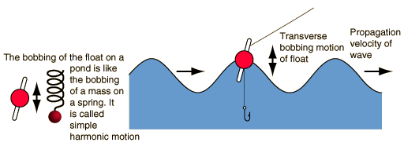

Waves on a Pond
|
|
A pebble thrown into a pond will produce concentric circular ripples which move outward from the point of impact. If a fishing float is in the water, the float will bob up and down as the wave moves by. This is a characteristic of transverse waves. Such waves obey the wave relationship. |
This is an example of the transverse waves produced by bubbles rising from the bottom of this clear pool along the Icefields Parkway in Alberta, Canada. Although not exactly a circle, and not exactly a sine wave, these ripples show the tendency of surface disturbances to produce traveling waves in all directions from the source.

The form of the dependence of the traveling wave parameters upon each other is a consequence of the basic motion equation and the definitions of the the terms which describe periodic motion. The description of water waves above is greatly oversimplified to demonstrate the nature of sinusoidal transverse waves. Waves on the ocean are much more complex, involving a circulation of the water as the wave passes so that the actual water motion is not just simple harmonic motion.
|
Index
Traveling wave concepts |